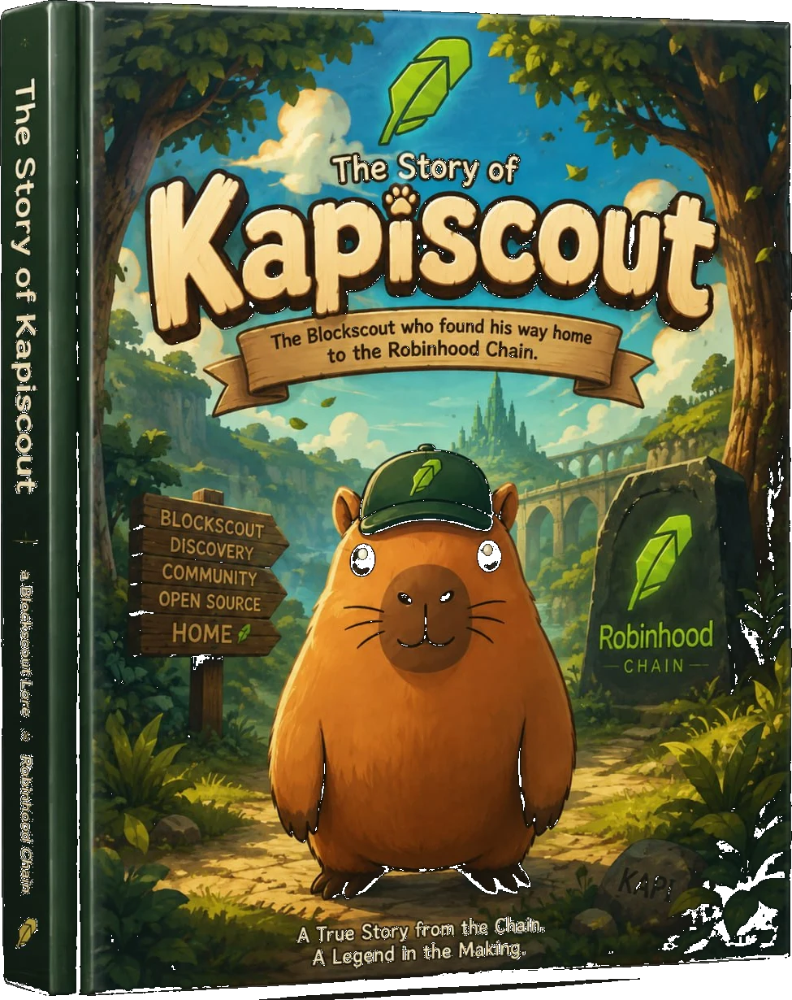
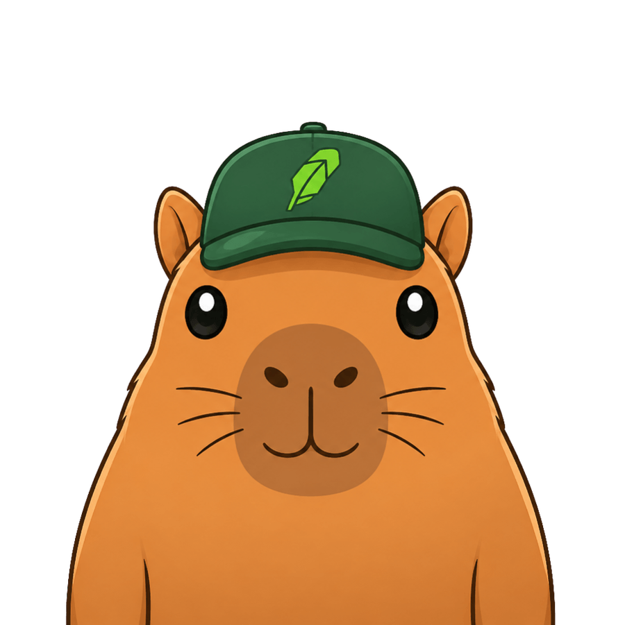
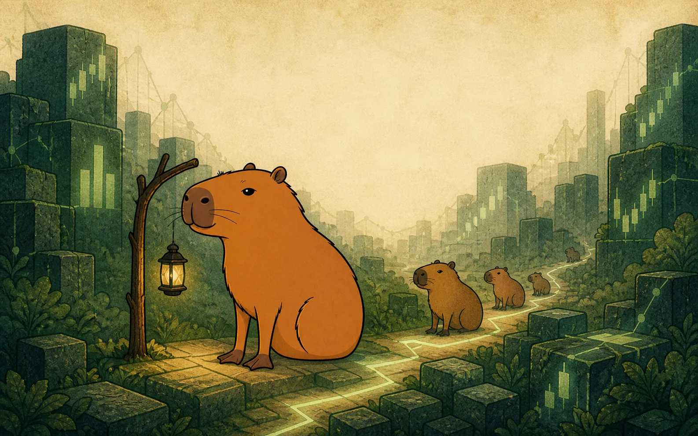
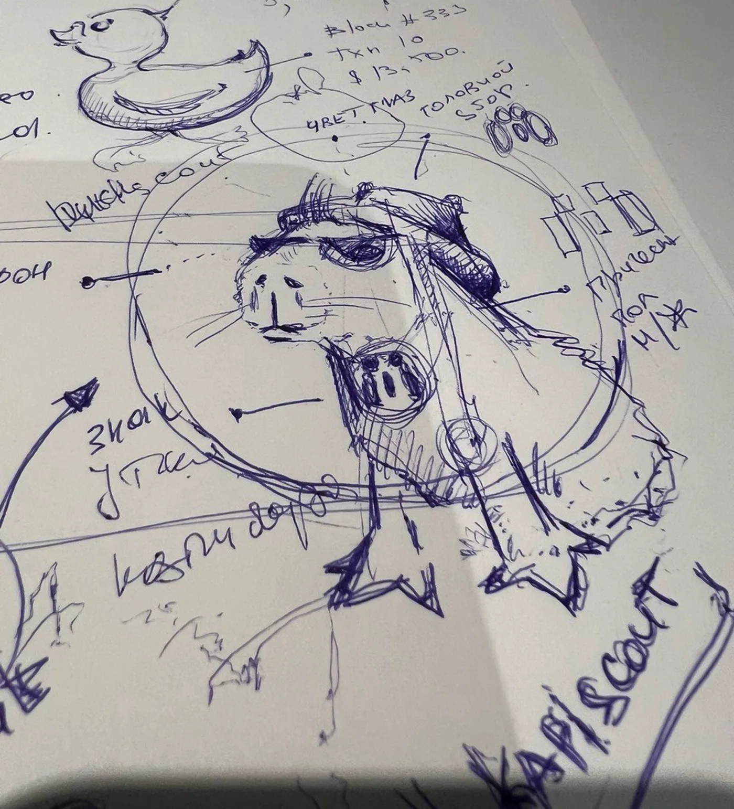

Kapiscout's story
The Scout
of Robinhood.

Blockscout published the story behind its capybara mascot. It began at a company offsite in Dubai, brainstorming a character that could carry the brand.
Read the original Blockscout article
Then came the idea: a Scout plus a Capybara. A friendly explorer for the blockchain. The team moved through concept after concept, from realistic animals to the cartoon Capybara Scout that stuck.
At the end of the article, Blockscout wrote: “there’s one thing missing – a name!”

And then, inside the very material documenting the mascot’s creation, a word appeared: Kapiscout
It could have been nothing. A concept label. An idea that never became official. But the word was there.
Kapiscout carries that explorer spirit into Robinhood Chain as a community character — unofficial, independent, and never speaking for Robinhood or Blockscout.